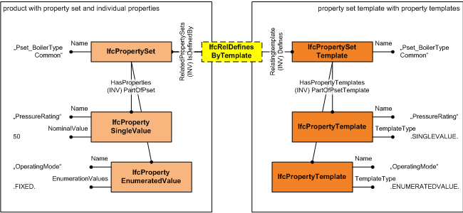
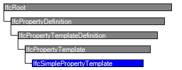

Natural language names
| Einfaches Merkmal - Vorlage | |
| Simple Property Template | |
| Modèle de propriété simple |
Change log
| Item | SPF | XML | Change | Description | IFC2x3 to IFC4 |
|---|---|---|---|---|
| IfcSimplePropertyTemplate | ADDED |
Semantic definitions at the entity
Entity definition
The IfcSimplePropertyTemplate defines the template for all dynamically extensible properties, either the subtypes of IfcSimpleProperty, or the subtypes of IfcPhysicalSimpleQuantity. The individual property templates are interpreted according to their Name attribute and may have a predefined template type, property units, and property measure types. The correct interpretation of the attributes:
\\* PrimaryUnit \\* SecondaryUnit \\* PrimaryMeasureType \\* SecondaryMeasureType
is determined by the TemplateType. The attributes Enumerators and Expression only apply to instances of IfcSimplePropertyTemplate having a particular TemplateType. The TemplateType also controls, which subtype of either IfcSimpleProperty or IfcPhysicalSimpleQuantity shall be used for property occurrences corresponding to this template.
The IfcSimplePropertyTemplate is part of the set of templates included in the IfcPropertySetTemplate. The template can be accessed throught the inverse attribute PartOfPsetTemplate The IfcPropertySetTemplate may define one or several instances of IfcPropertySet (or IfcElementQuantity). The definition assignment is established by the objectified relationship IfcRelDefinesByTemplate as shown in Figure 6. There is no direct link between an IfcSimplePropertyTemplate and a subtype of either IfcSimpleProperty or IfcPhysicalSimpleQuantity. The definition relationship between the template and the individual properties (or quantities) is established by the Name attributes.
NOTE Constraints at IfcPropertySetTemplate and IfcPropertySet (and IfcElementQuantity) guarantee that the Name attributes of included property templates and individual properties are unique.
|  |
Figure 6 — Property template relationships |
HISTORY New entity in IFC4.
Attribute definitions
| # | Attribute | Type | Cardinality | Description | C |
|---|---|---|---|---|---|
| 5 | TemplateType | IfcSimplePropertyTemplateTypeEnum | ? |
Property type defining whether the property template defines a property with a single value, a bounded value, a list value, a table value, an enumerated value, or a reference value. Or the quantity type defining whether the template defines a quantity with a length, area, volume, weight or time value.
NOTE the value of this property determines the correct use of the PrimaryUnit, SecondaryUnit, PrimaryDataType, SecondaryDataType, and Expression attributes. | X |
| 6 | PrimaryMeasureType | IfcLabel | ? |
Primary measure type assigned to the definition of the property. It should be provided, if the PropertyType is set to:
\\* P_SINGLEVALUE: determining the measure type of IfcPropertySingleValue.NominalValue
\\* P_ENUMERATEDVALUE: determining the measure type of IfcPropertyEnumeratedValue.EnumerationValues
\\* P_BOUNDEDVALUE: determining the measure type of IfcPropertyBoundedValue.LowerBoundValue
\\* P_LISTVALUE: determining the measure type of IfcPropertyListValue.ListValues
\\* P_TABLEVALUE: determining the measure type of IfcPropertyTableValue.DefiningValues
\\* P_REFERENCEVALUE: determining the measure type of IfcPropertyTableValue.PropertyReference
NOTE The value range of the measure type is within the select type IfcValue for all PropertyType's with the exeption of P_REFERENCEVALUE. Here it is within the select type IfcObjectReferenceSelect. | X |
| 7 | SecondaryMeasureType | - | This attribute is out of scope for this model view definition and shall not be set. | ||
| 8 | Enumerators | - | This attribute is out of scope for this model view definition and shall not be set. | ||
| 9 | PrimaryUnit | - | This attribute is out of scope for this model view definition and shall not be set. | ||
| 10 | SecondaryUnit | - | This attribute is out of scope for this model view definition and shall not be set. | ||
| 11 | Expression | - | This attribute is out of scope for this model view definition and shall not be set. | ||
| 12 | AccessState | - | This attribute is out of scope for this model view definition and shall not be set. |
Inherited definitions from supertypes
Entity inheritance
Attribute inheritance
| # | Attribute | Type | Cardinality | Description | C |
|---|---|---|---|---|---|
| IfcRoot | |||||
| 1 | GlobalId | IfcGloballyUniqueId | Assignment of a globally unique identifier within the entire software world. | X | |
| 2 | OwnerHistory | IfcOwnerHistory | ? |
Assignment of the information about the current ownership of that object, including owning actor, application, local identification and information captured about the recent changes of the object,
NOTE only the last modification in stored - either as addition, deletion or modification. IFC4 CHANGE The attribute has been changed to be OPTIONAL. | X |
| 3 | Name | IfcLabel | ? | Optional name for use by the participating software systems or users. For some subtypes of IfcRoot the insertion of the Name attribute may be required. This would be enforced by a where rule. | X |
| 4 | Description | IfcText | ? | Optional description, provided for exchanging informative comments. | X |
| IfcPropertyDefinition | |||||
| HasAssociations | IfcRelAssociates @RelatedObjects | S[0:?] | Reference to the relationship IfcRelAssociates and thus to those externally defined concepts, like classifications, documents, or library information, which are associated to the property definition. | ||
| IfcPropertyTemplateDefinition | |||||
| IfcPropertyTemplate | |||||
| PartOfPsetTemplate | IfcPropertySetTemplate @HasPropertyTemplates | S[0:?] | Reference to the IfcPropertySetTemplate that defines the scope for the IfcPropertyTemplate. A single IfcPropertyTemplate can be defined within the scope of zero, one or many IfcPropertySetTemplate'. | ||
| IfcSimplePropertyTemplate | |||||
| 5 | TemplateType | IfcSimplePropertyTemplateTypeEnum | ? |
Property type defining whether the property template defines a property with a single value, a bounded value, a list value, a table value, an enumerated value, or a reference value. Or the quantity type defining whether the template defines a quantity with a length, area, volume, weight or time value.
NOTE the value of this property determines the correct use of the PrimaryUnit, SecondaryUnit, PrimaryDataType, SecondaryDataType, and Expression attributes. | X |
| 6 | PrimaryMeasureType | IfcLabel | ? |
Primary measure type assigned to the definition of the property. It should be provided, if the PropertyType is set to:
\\* P_SINGLEVALUE: determining the measure type of IfcPropertySingleValue.NominalValue
\\* P_ENUMERATEDVALUE: determining the measure type of IfcPropertyEnumeratedValue.EnumerationValues
\\* P_BOUNDEDVALUE: determining the measure type of IfcPropertyBoundedValue.LowerBoundValue
\\* P_LISTVALUE: determining the measure type of IfcPropertyListValue.ListValues
\\* P_TABLEVALUE: determining the measure type of IfcPropertyTableValue.DefiningValues
\\* P_REFERENCEVALUE: determining the measure type of IfcPropertyTableValue.PropertyReference
NOTE The value range of the measure type is within the select type IfcValue for all PropertyType's with the exeption of P_REFERENCEVALUE. Here it is within the select type IfcObjectReferenceSelect. | X |
| 7 | SecondaryMeasureType | - | This attribute is out of scope for this model view definition and shall not be set. | ||
| 8 | Enumerators | - | This attribute is out of scope for this model view definition and shall not be set. | ||
| 9 | PrimaryUnit | - | This attribute is out of scope for this model view definition and shall not be set. | ||
| 10 | SecondaryUnit | - | This attribute is out of scope for this model view definition and shall not be set. | ||
| 11 | Expression | - | This attribute is out of scope for this model view definition and shall not be set. | ||
| 12 | AccessState | - | This attribute is out of scope for this model view definition and shall not be set. | ||
Formal representations
XML Specification
<xs:element name="IfcSimplePropertyTemplate" type="ifc:IfcSimplePropertyTemplate" substitutionGroup="ifc:IfcPropertyTemplate" nillable="true"/>
<xs:complexType name="IfcSimplePropertyTemplate">
<xs:complexContent>
<xs:extension base="ifc:IfcPropertyTemplate">
<xs:attribute name="TemplateType" type="ifc:IfcSimplePropertyTemplateTypeEnum" use="optional"/>
<xs:attribute name="PrimaryMeasureType" type="ifc:IfcLabel" use="optional"/>
</xs:extension>
</xs:complexContent>
</xs:complexType>
EXPRESS Specification
ENTITY IfcSimplePropertyTemplate
SUBTYPE OF (IfcPropertyTemplate);
TemplateType : OPTIONAL IfcSimplePropertyTemplateTypeEnum;
PrimaryMeasureType : OPTIONAL IfcLabel;
SecondaryMeasureType : OPTIONAL IfcStrippedOptional;
Enumerators : OPTIONAL IfcStrippedOptional;
PrimaryUnit : OPTIONAL IfcStrippedOptional;
SecondaryUnit : OPTIONAL IfcStrippedOptional;
Expression : OPTIONAL IfcStrippedOptional;
AccessState : OPTIONAL IfcStrippedOptional;
END_ENTITY;
JSON Specification
public class IfcSimplePropertyTemplate extends IfcPropertyTemplate
{
private IfcSimplePropertyTemplateTypeEnum TemplateType;
private string PrimaryMeasureType;
private string SecondaryMeasureType;
private IfcStrippedOptional Enumerators;
private IfcStrippedOptional PrimaryUnit;
private IfcStrippedOptional SecondaryUnit;
private string Expression;
private IfcStrippedOptional AccessState;
}
 Link to this page
Link to this page